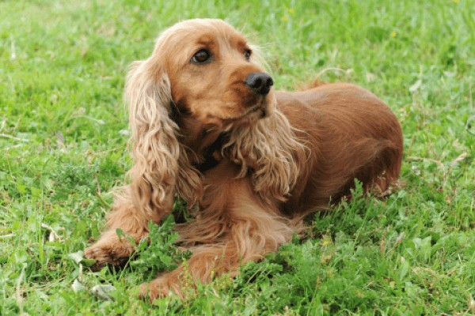

Моя собака породы Английский золотистый кокер спаниель у меня уже 5 лет. Она очень активная, игривая и ласковая. Очень любит людей и особенно детей.
Моя собака получает сбалансированное питание, в котором преобладают высококачественные белки, жиры и углеводы. Я регулярно следую за гигиеной моей собаки, регулярно чищу ей зубы и окуриваю ветеринарные осмотры.
Моя собака Английский золотистый кокер спаниель - это мой лучший друг и верный пес-компаньон. Я люблю проводить время с ней и ухаживать за ней. Она всегда вызывает у меня положительные эмоции и улыбки.
Хотите узнать больше о породе Английский золотистый кокер спаниель? Посетите эту статью на Википедии.
